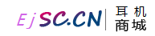

<!--电脑商城logo-->
<div class="row">
	<div class="col-md-3">
		<a href="index.html">
			
		</a>
	</div>
	<!--快捷选项-->
	<div class="col-md-9 top-item">
		<ul id="topMenu" class="list-inline pull-right">
			<li><a href="favorites.html"><span class="fa fa-heart"></span>&nbsp;收藏</a></li>
			<li class="li-split">|</li>
			<li><a href="orders.html"><span class="fa fa-file-text"></span>&nbsp;订单</a></li>
			<li class="li-split">|</li>
			<li><a href="cart.html"><span class="fa fa-cart-plus"></span>&nbsp;购物车</a></li>
			<li class="li-split">|</li>
			<li>
				<!--下列列表按钮 ：管理-->
				<div class="btn-group">
					<button type="button" class="btn btn-link dropdown-toggle" data-toggle="dropdown">
						<span id="top-dropdown-btn"><span class="fa fa-gears"></span>&nbsp;管理 <span id="menuCaret" class="caret"></span></span>
					</button>
					<ul id="uiMenu" class="dropdown-menu top-dropdown-ul" role="menu">
						<li><a href="password.html">修改密码</a></li>
						<li><a href="userdata.html">个人资料</a></li>
						<li><a href="upload.html">上传头像</a></li>
						<li><a href="address.html">收货管理	</a></li>
					</ul>
				</div>
			</li>
			<li class="li-split">|</li>
			<li><span class="fa fa-user"></span><a href="login.html" id="loginStatus" ></a></li>
		</ul>
	</div>
</div>

<script>
	$(document).ready(function () {
		load_data();
	});

	function load_data() {
		var username = $.cookie("username");
		var avatar = $.cookie("avatar");
		console.log(11);
		console.log(username);
		console.log(avatar);
		//在此页面cookie值为null
		if (username != null){
			//修改为登录的用户名
			$("#loginStatus").html("&nbsp;" + username)
			//添加退出按钮
			let exitStr = "<li class=\"li-split\">|</li>"
					+ "<li id='logout'>"
					+ "<span class=\"fa fa-sign-out\"></span>"
					+ "<a href=\"javascript:void(0)\" onclick=\"exitLogin()\">&nbsp;退出</a>"
					+ "</li>";
			$("#topMenu").append(exitStr)
			//移除跳转属性
			document.getElementById("loginStatus").removeAttribute("href")
		}else{
			//设置显示登录
			$("#loginStatus").empty().html("&nbsp;&nbsp;" + "登录")

			// 可退出，但是前端显示有问题，待解决。。。
		}
	};

	//退出功能
	function exitLogin(){
		if ($.cookie("username") == null){
			alert("尚未登录，请先登录！");
		}else {
			console.log("发起请求")
			$.ajax({
				url: "/users/exit",
				type: "get",
				dataType: "json",
				success:function (json) {
					if (json.state == 200){
						alert("退出成功!")
						$.cookie('username',{expires:-1});
						// location.href = "index.html";
						$("#logout").hide();
						$("#loginStatus").empty().html("&nbsp;&nbsp;" + "登录");
					}
				},
				error:function () {
					alert("服务器出现未知异常，退出登录失败");
				}
			})


		}
	}
</script>